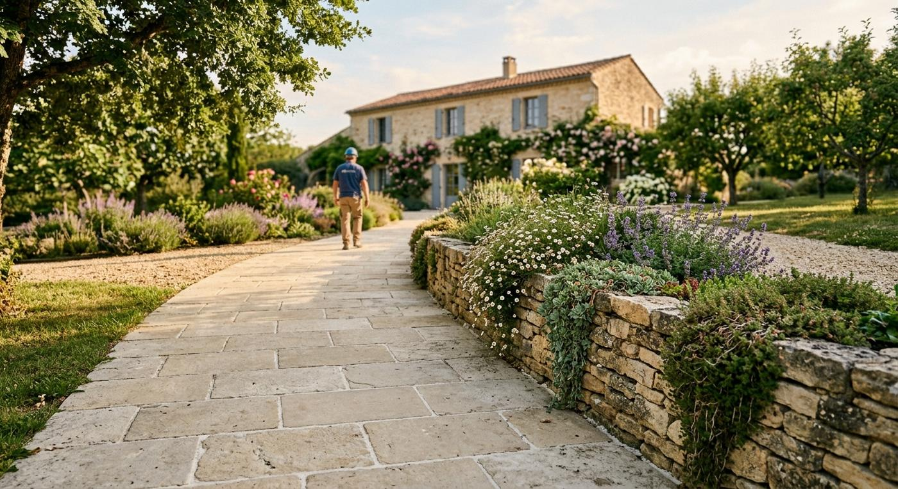
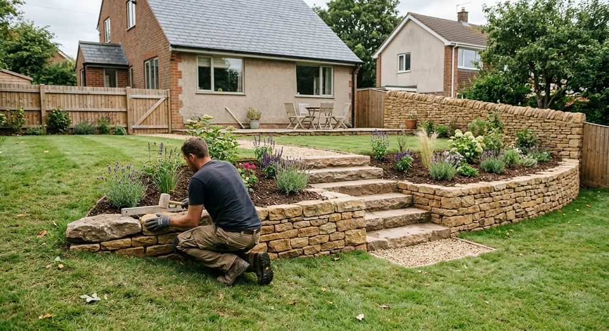
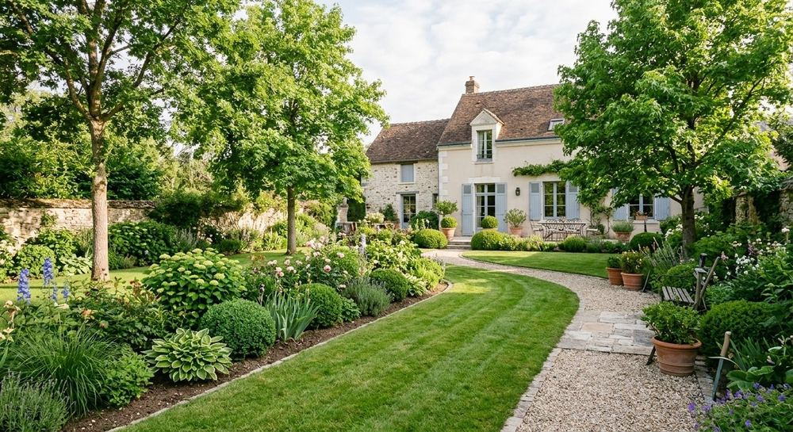

Aménagement paysager · Houilles (78)
Votre jardin, pensé et aménagé près de chez vous
Artivert Lenaik crée, aménage et entretient jardins et espaces verts. Une entreprise de paysage créée en 2002 et basée à Houilles.
- Créée en 2002
- Équipe de 10 à 19 salariés
- Siège à Houilles
Savoir-faire
Ce que nous faisons dans votre jardin
De la création d'un espace vert à son entretien, un seul interlocuteur pour l'ensemble du jardin.

Création d'espaces verts

Terrasses en bois

Allées et dallages

Maçonnerie paysagère

Plantations

Entretien du jardin

À propos
Une entreprise de paysage de Houilles
- Création
- 1er juin 2002
- Forme
- Société à responsabilité limitée
- Équipe
- 10 à 19 salariés (2024)
- Dirigeant
- Rodolphe Gaffet
- Siège
- 42 avenue de l'Yser, 78800 Houilles
Source : Annuaire des entreprises (SIREN 442 365 821).
Méthode
Du premier échange à l'entretien
Un projet de jardin se déroule en quatre temps.
-
Étape 1
Échange
Nous écoutons vos envies et regardons le terrain ensemble.
-
Étape 2
Conception
Le projet se dessine sur plan, avec les matériaux et les végétaux adaptés.
-
Étape 3
Réalisation
L'équipe aménage : terrassement, maçonnerie, plantations.
-
Étape 4
Entretien
Le jardin se suit dans la durée : pelouse, taille, désherbage.
Contact
Parlons de votre projet
Appelez-nous ou décrivez votre jardin en quelques lignes : nous reviendrons vers vous.
Artivert Lenaik · 42 avenue de l'Yser · 78800 Houilles